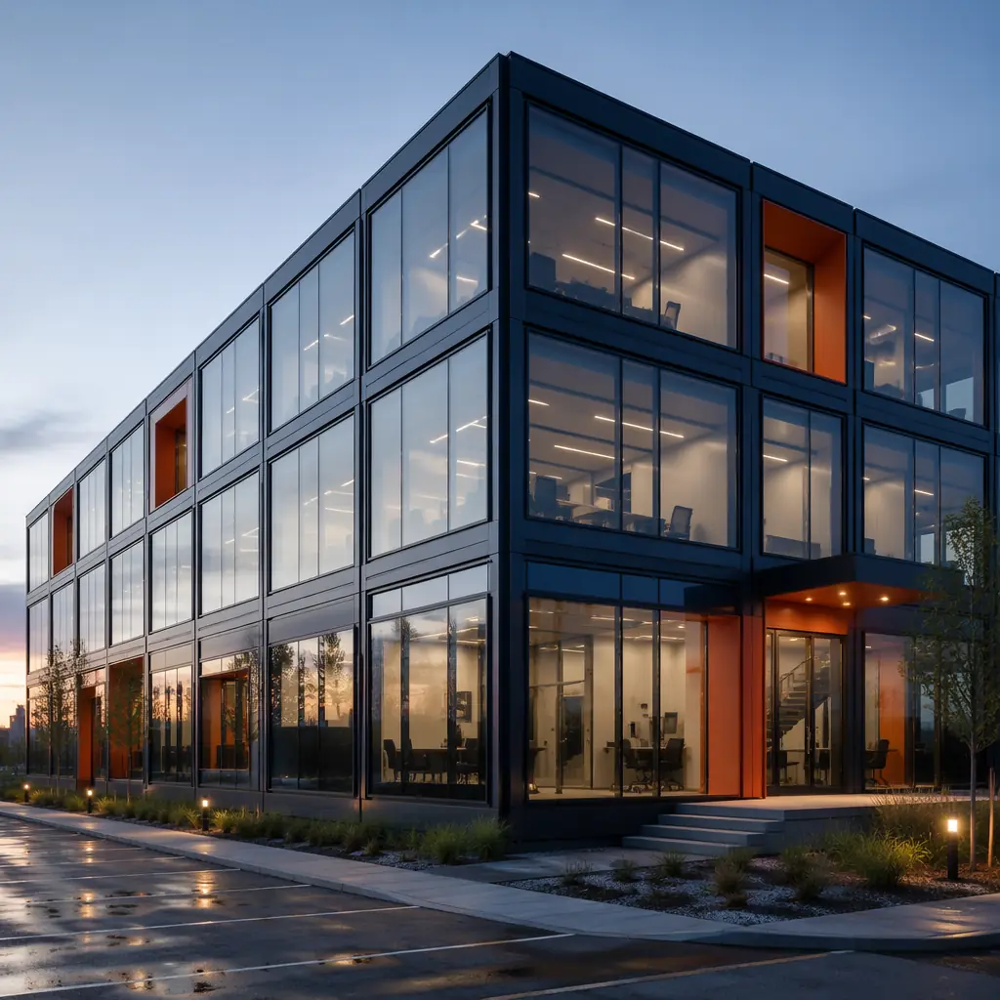
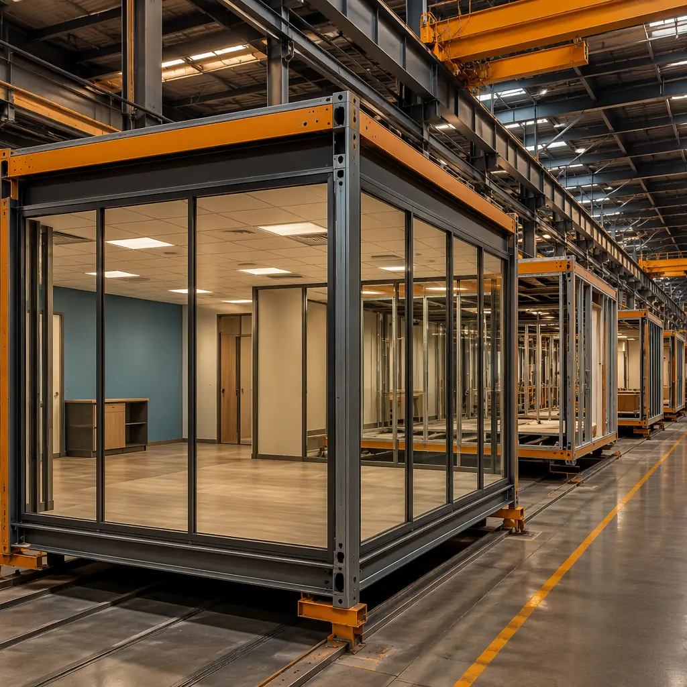
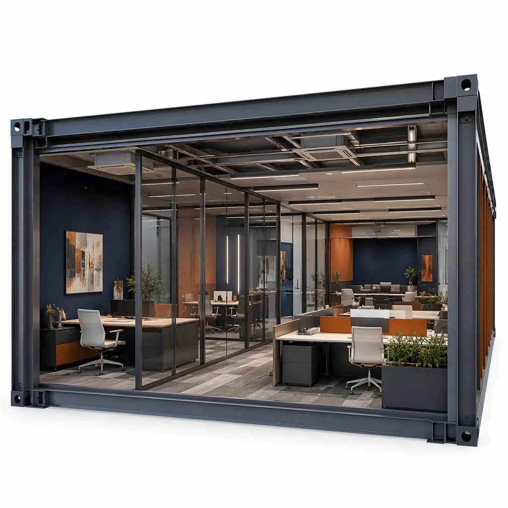

The flexible office market has grown from a niche alternative to a structural force in commercial real estate. Coworking operators, serviced office providers, and corporate flexible-space programs now account for an estimated 8–12% of office leasing volume in major global markets, and the demand pattern is clear: tenants want spaces that open faster, adapt to fluctuating headcounts, and can be relocated or expanded without the capital intensity of conventional leasehold improvements. Modular construction aligns with all three of these requirements — and for coworking operators specifically, it solves a set of timing and capital deployment problems that traditional construction addresses poorly. This article examines how factory-built modules create competitive advantages for flexible office providers.

The Coworking Business Case: Why Speed-to-Revenue Is Everything
A conventional coworking location build-out follows a well-known and painful timeline: 4–6 months for lease negotiation and design, 2–3 months for permitting, 4–8 months for construction and interior fit-out, and 1–2 months for pre-opening marketing and member onboarding. That is 11–19 months from site identification to first membership revenue — during which the operator pays rent, carries staff, and generates zero income from the location.
Modular construction compresses the post-permit construction phase from 4–8 months to 6–10 weeks of on-site work. A 15,000 sqft coworking facility built from 20–25 modules can be set and connected in 2–3 weeks, with finish work and commissioning completed in another 3–5 weeks. The modules arrive with interior partitions, flooring, ceiling systems, lighting, MEP rough-in, and even millwork pre-installed — the on-site work is limited to module-joint finishing, utility tie-ins, and IT/low-voltage commissioning. For a coworking operator targeting 25 locations over 3 years, this timeline compression translates to approximately 18–24 months of additional aggregate revenue versus conventional build-out timelines. For a broader comparison of modular speed advantages across building types, see our detailed project timeline analysis.
| Build-Out Phase | Conventional (weeks) | Modular (weeks) | Advantage |
|---|---|---|---|
| Lease negotiation & design | 16–24 | 16–24 | Same |
| Permitting | 8–12 | 8–12 | Same |
| Construction & fit-out | 16–32 | 6–10 on site | 50–60% faster |
| Pre-opening & onboarding | 4–8 | 4–8 | Same |
| Total (site ID to first revenue) | 44–76 weeks | 34–54 weeks | 10–22 weeks saved |

Design Flexibility: The Open-Plan to Private-Office Spectrum
Coworking spaces are defined by their spatial variety: open hot-desking zones, dedicated desks, private offices for 2–10 people, meeting rooms, phone booths, event spaces, cafés, and wellness rooms. This programmatic diversity is exactly what modular construction handles well — because each module type can be fabricated to a different interior specification on the same production line.
A typical modular coworking facility might deploy five module types: open-area modules with minimal interior partitions and exposed ceiling services (hot-desking zones), private-office modules with full-height glazed partitions and acoustically rated demising walls, meeting-room modules with integrated AV conduits, acoustic treatments, and operable wall systems, amenity modules with kitchen plumbing rough-ins, café millwork, and lounge furniture configurations, and core modules housing restrooms, server closet, and mechanical equipment. Each type is built to its own specification but shares the same structural frame, MEP connection points, and module-to-module interface details — making the overall building assembly predictable while the interior configuration remains flexible.
For operators who need to reconfigure their space mix over time (e.g., converting open desks to private offices as member preferences shift), modular offers an additional advantage: modules can be swapped or reconfigured with far less disruption than gutting and rebuilding a conventional interior. This is a form of future-proofing that conventional leasehold improvements cannot match. Our design flexibility analysis covers the full range of modular customization options across building types. For general modular office construction, see our comprehensive modular office guide.
Capital Efficiency: How Modular Improves the Unit Economics
Coworking operators face a distinctive capital deployment challenge: each new location requires significant upfront investment (lease deposit, construction, furniture and technology, pre-opening marketing) with a 12–18 month ramp to stabilized occupancy and positive unit economics. Shortening the construction phase by 10–22 weeks directly improves internal rate of return (IRR) on each location and allows the operator to open more locations with the same capital base over a given period.
Consider a coworking brand with $15 million in expansion capital targeting 15 locations over 3 years at an average build-out cost of $800,000 per location for construction. If modular construction saves 14 weeks per location (the midpoint of our range), the operator opens location #15 approximately 3 years earlier in aggregate timeline terms — generating an estimated $2.1 million in additional membership revenue that would have been delayed under conventional timelines. The construction cost itself is comparable: modular office fit-out typically runs $110–170/sqft turnkey, versus $120–180/sqft for conventional commercial tenant improvement of similar quality. The financial advantage comes from time, not from savings on the construction line item. For a developer-oriented cost analysis, see our cost per square foot guide.

Multi-Site Consistency: The Brand Standardization Advantage
For coworking brands operating 5, 20, or 50+ locations, consistency of member experience is both a brand promise and an operational requirement. A member who books a private office in London should experience the same acoustic privacy, lighting quality, HVAC comfort, and technology interface as in Dubai or Singapore. Conventional construction makes this consistency expensive to achieve — it requires detailed specifications, rigorous site supervision, and tolerance for the inevitable variation introduced by different contractors, climates, and local material availability.
Modular construction builds consistency into the production system. The module specifications are engineered once and replicated in the factory, regardless of where the finished building will stand. MODURA's factory quality control system applies 140+ standardized inspection checkpoints to every module — the same welds, the same MEP pressure tests, the same finish inspections, whether the module is destined for Berlin or Bangkok. This repeatability is particularly valuable for franchised coworking brands, where the brand owner needs to guarantee member experience quality across independently owned and operated locations. Our factory QC systems analysis details how this consistency is achieved at scale.
Relocatability: The Option Value That Conventional Construction Cannot Offer
Perhaps the most underappreciated advantage of modular construction for flexible office operators is the option to relocate. A conventional leasehold improvement is a sunk cost — when the lease expires, the investment in partitions, ceilings, flooring, lighting, and MEP modifications is abandoned. A modular coworking facility can, in principle, be disassembled, transported, and reassembled at a new location, recovering 60–80% of the module value.
In practice, most modular commercial buildings remain in place for their full economic life, but the relocation option changes how operators can think about site selection. A location that would be marginal under a 10-year conventional lease with $1.2 million in non-recoverable fit-out costs may be viable under a modular approach where the fit-out investment retains substantial residual value. This is particularly relevant for operators testing new markets or deploying pop-up locations in connection with major events, construction projects, or seasonal demand patterns. For a full analysis of relocation logistics and economics, see our building relocation guide and our design for disassembly analysis.
When Modular Coworking Makes Sense — And When It Doesn't
Strong fit for modular: multi-site operator with brand standards and 5+ planned locations; ground-up or building-attached new construction (not tenant improvement within an existing building shell); locations where speed to revenue materially impacts project returns; markets with high construction labor costs or limited availability of skilled finish trades; operators seeking relocation optionality for market-testing or event-driven locations.
Better suited to conventional TI: single-location fit-out within an existing office building where the base building shell, elevators, and core services are already in place; spaces under 5,000 sqft where module transport and crane access costs overwhelm the speed advantage; historic or architecturally constrained buildings where module dimensions cannot be accommodated.
For operators evaluating the option, the decision typically comes down to two numbers: the value of 10–22 weeks of accelerated revenue versus any premium in modular construction cost (which is often zero or negative compared to high-quality conventional TI). In most multi-location scenarios, the math favors modular. For a comparison with other flexible-space approaches, see our analysis of hybrid construction methods and for developers considering the broader office market, our developer's ROI guide.